în fiecare nou început de an, iubitorii de lectură aşteaptă noile cărţi ce se vor lansa, cu toate ca au un TBR ce nu se va sfârşii niciodată. Anul 2023 se anunţă un an plin de cărţi mult aşteptate, precum ″Spare″ sau ″It start with us″, însă cititorii abia aşteptă sa descopere şi autori noi. Poate că anul abia a început, dar editorii de la Vogue au fost ocupaţi să clasifice cele mai bune cărţi din 2023 de până acum.
1.″Cioburile″ de Brett Easton Ellis
2.″Sam″ de Allegra Goodman
3.″Supravieţuitorii″ de Kashana Cauley
4.″Marele elveţian″ de Jen Beagin
5.″Oameni reci″ de Tom Rob Smith
6.″Birnam Wood″ de Eleanor Catton
7.″Regatul pregătirii: povestea interioară a ascensiunii şi căderii lui J.Crew″ de Maggie Bullock
8.″Jumătatea lunii″ de Mary Beth Keane
9 ″Cartea poştală″ de Anne Berest
10.″Invitatul″ de Emma Cline
 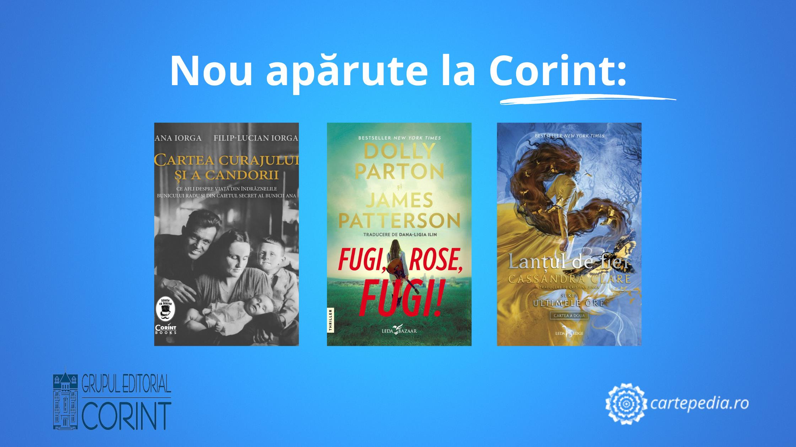
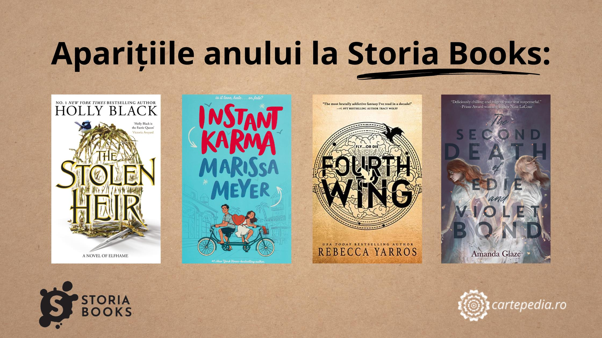
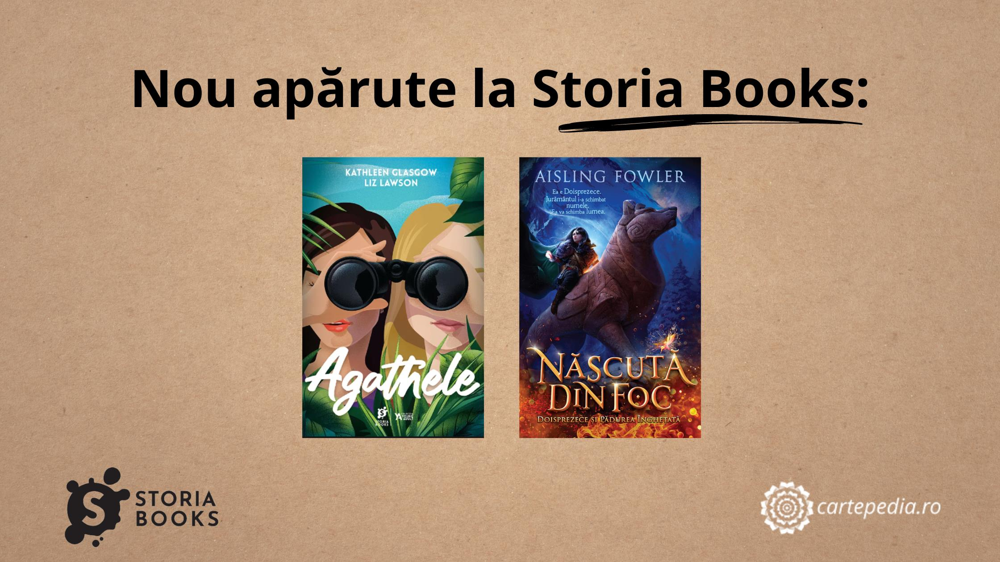
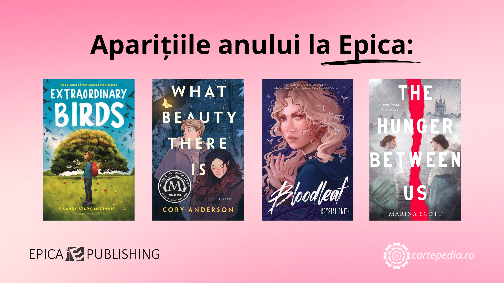
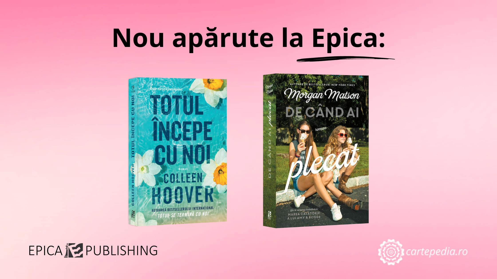
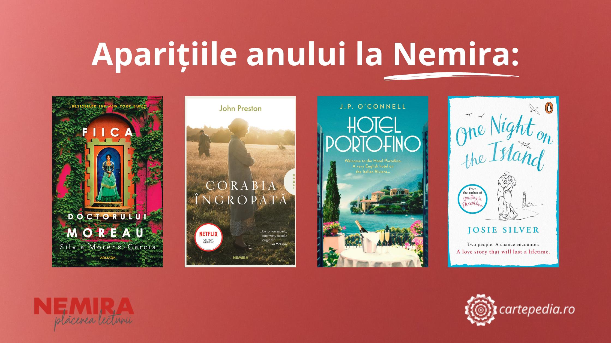
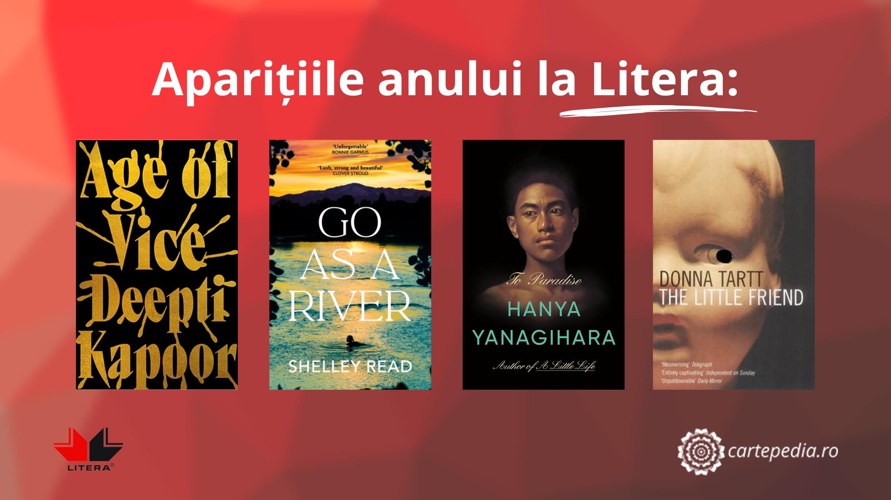
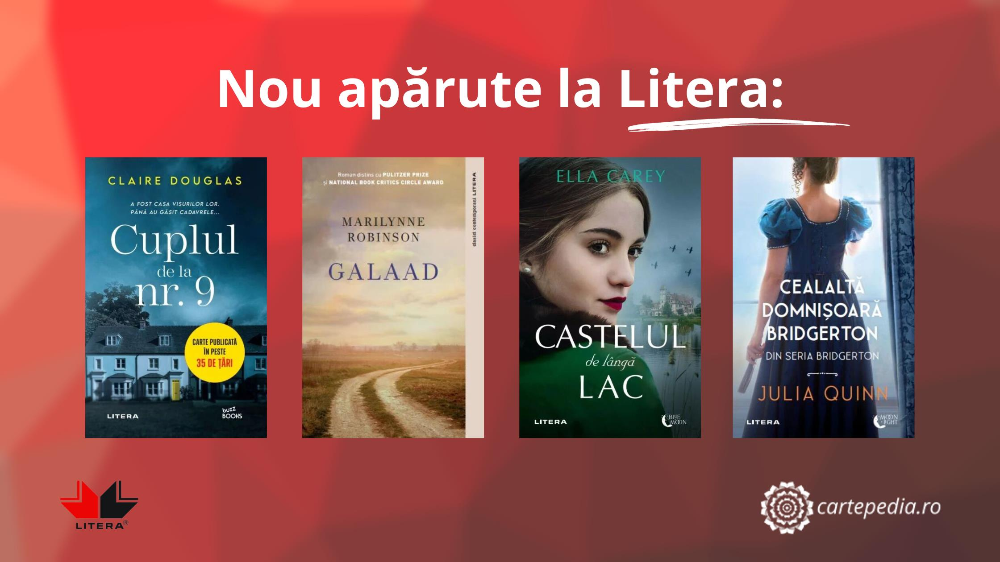
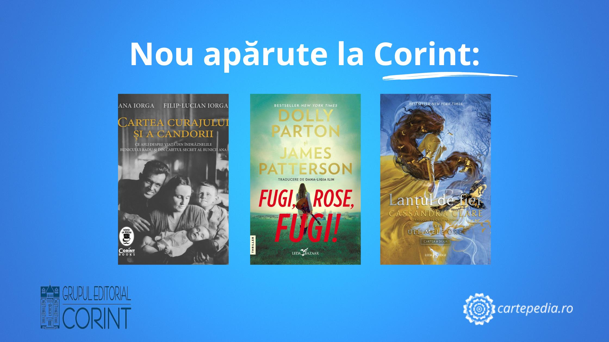
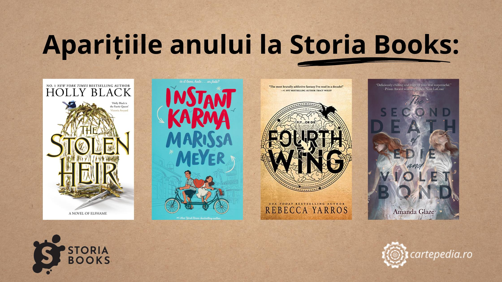
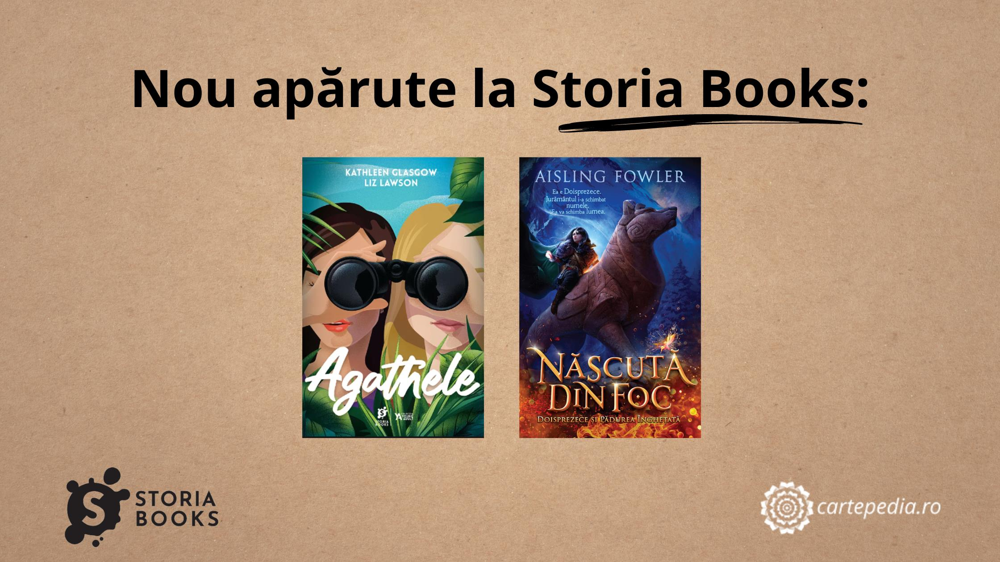
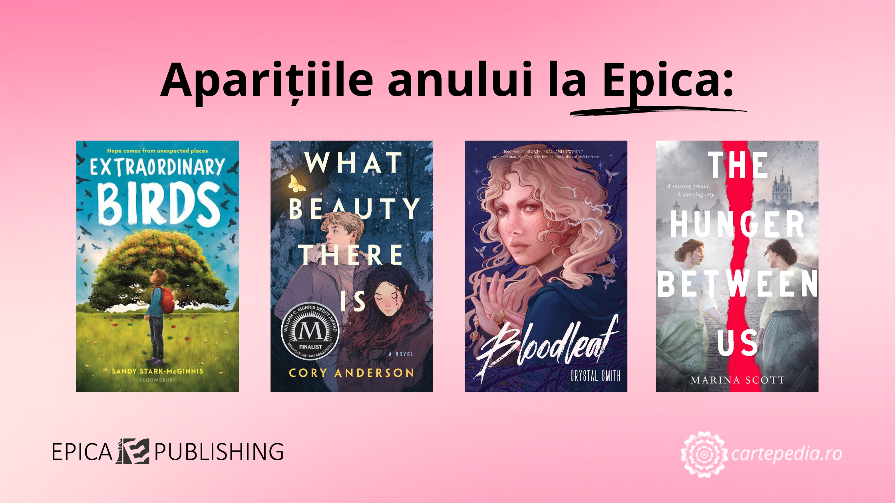
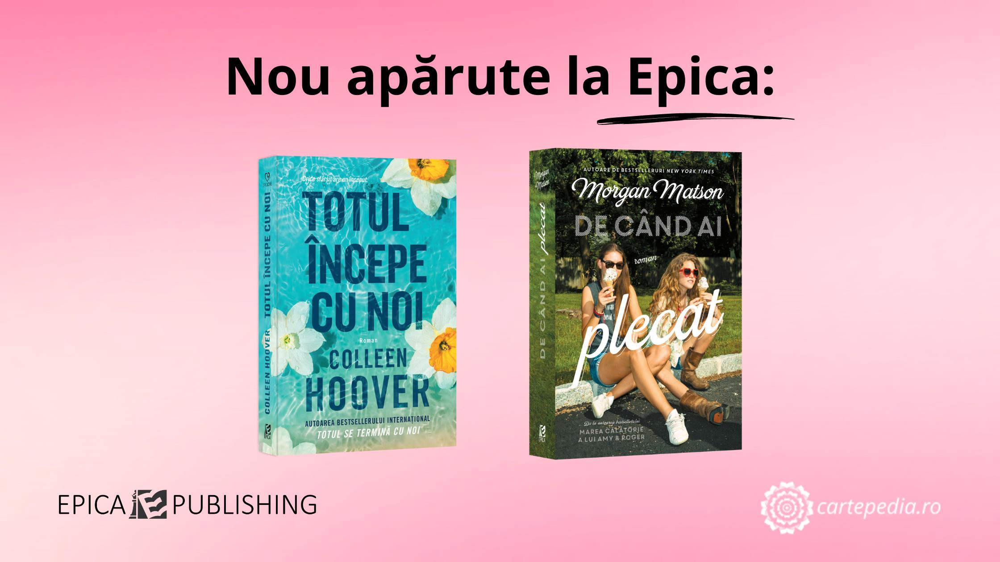
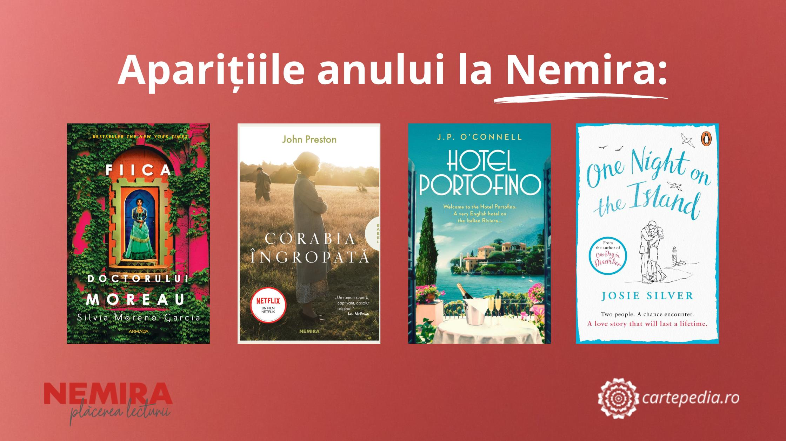
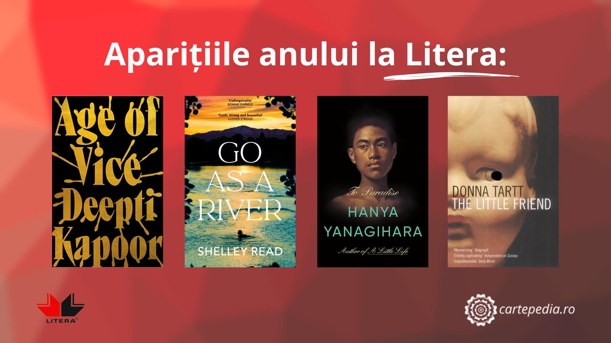
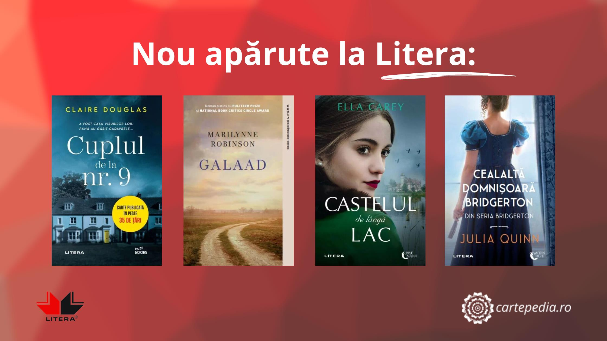